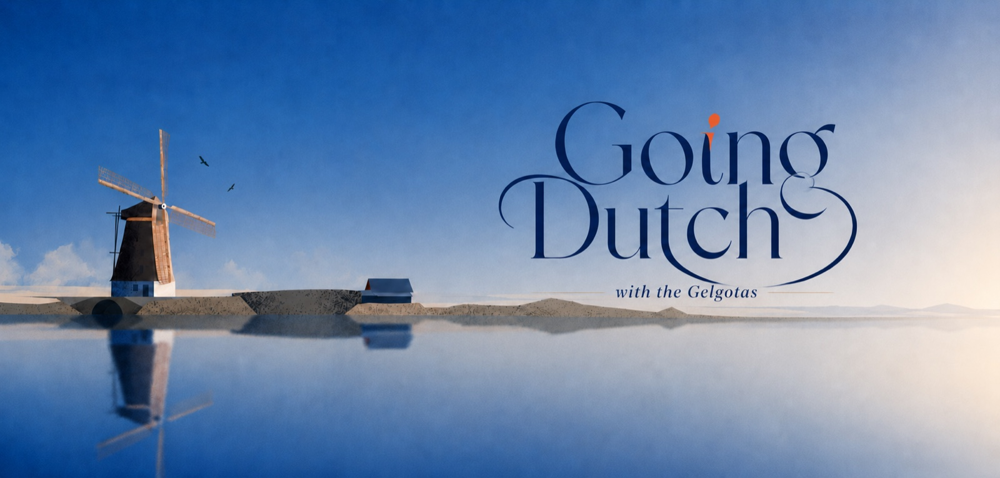
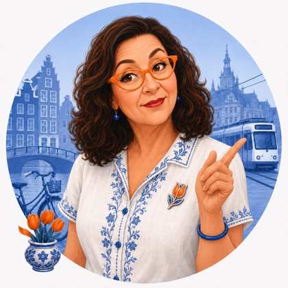
A letter from Tulp de Gid 🌷
Lieve Gelgotas, allow me to introduce myself. I am Tulp de Gid, and I have appointed myself your guide to this small, soggy, wonderful country you are about to call home. Every week I will send you a little letter like this one, with the week's news, a bit of gossip, a dish to cook, a painting to admire, a postcard from the coast, and the words you will need, so that when you step off the plane you already feel like one of us. That is the whole idea of these letters: to hand you the Netherlands a little at a time, until it is yours. And what a week to begin on. The country has gone orange for the football, the herring boats are coming home, and your future neighbours in Scheveningen are stringing up the little flags. Pour the coffee and sit with me.
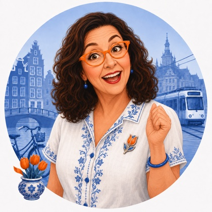
The big story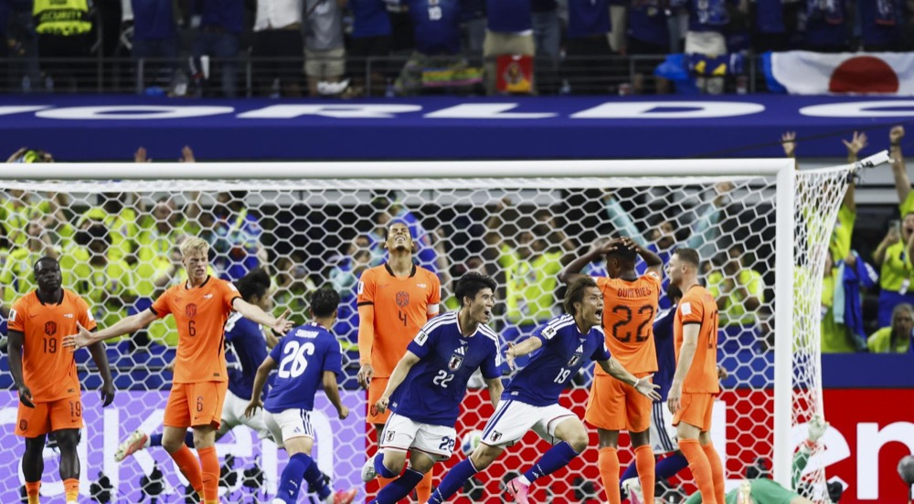
The football World Cup is on, and it is being played right on your side of the ocean, in the United States. You must understand, my dears, we lose our heads for our national team, the Oranje, named for the orange we all wear. Whole streets turn orange, flags hang from the windows, the bakery sells orange cake. It is a happy madness, and soon it will be yours too.
Our boys opened this past Sunday, the 14th of June, in Dallas, against Japan. We were winning, and then in the 88th minute Japan equalised and held us to a 2 to 2 draw. A nervy start, very Oranje of us. We are the great heartbreakers of football, and we adore them anyway. The next match is this Saturday, the 20th of June, against Sweden, in Houston. Put on something orange and shout along.
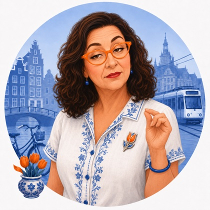
A few quick things, told quicklyThis month our king and queen, Willem-Alexander and Maxima, hosted the German president with all the pomp we can muster, and our young heir, the 22-year-old Princess Amalia, wore her mother's wedding tiara for the banquet. Maxima, born in Argentina, is the warm and beloved face of the crown you are moving under, and the one you will come to know best.
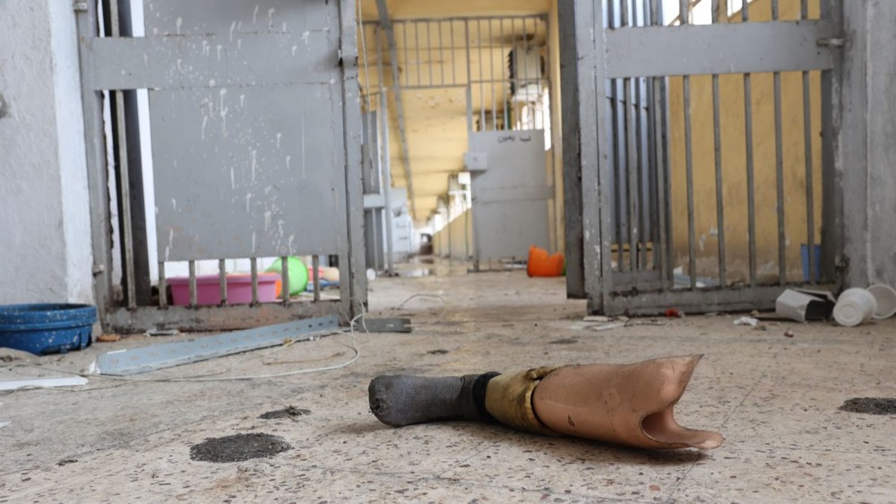
A court right here in The Hague has just jailed a man for 26 years for torture at a Syrian prison, judged in a Dutch courtroom though the crimes happened far away. This is what your new city does, lieverds. The Hague is the world's city of justice, where the planet brings its very worst to be answered for. You will live a tram ride from the courtrooms that try the things the rest of us only read about.
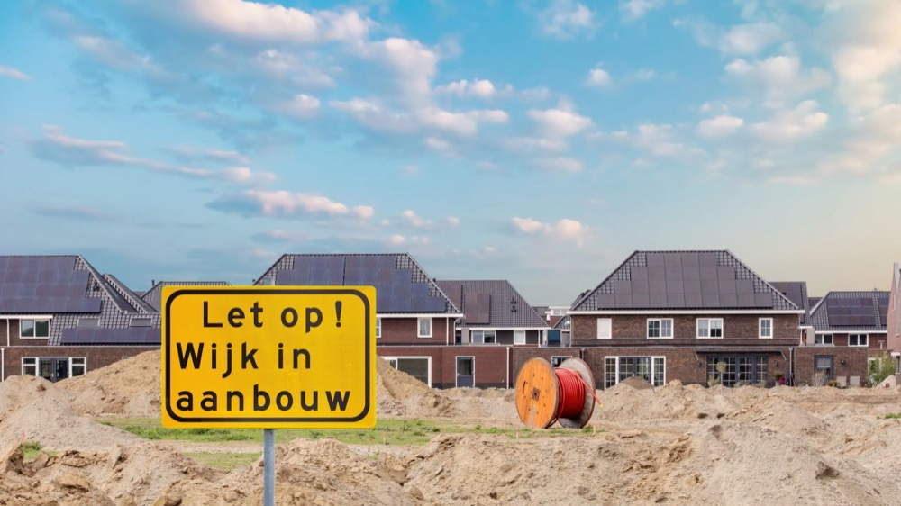
Now, a hard truth, and I will not sugar it: finding a home here is murder, and the figures prove it. A new private renter, which is exactly what you will be when you arrive, now hands over about 35 percent of their income in rent, and the official value of homes has jumped more than 10 percent in a year, to around 439,000 euros. Start the hunt early, and be brave.
🌷 Tulp's Dutch Calendar Radar
Mark it, lieverds: this Saturday, the 20th of June, Scheveningen holds Vlaggetjesdag, "Little Flags Day," the morning the new-herring season opens. The fishing boats dress themselves bow to stern in tiny flags, the brass bands play, and the very first barrel of the season's herring is auctioned for charity. Last year a single barrel went for 89,500 euros, all of it to a children's healthy-eating fund. It happens a short walk from where you will live. Your first summer here, we will go together.
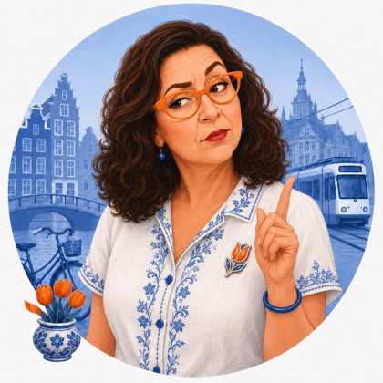
A couple of voices worth followingTwo clever voices from the little screens, both very good at explaining us to newcomers like you. I follow them myself.
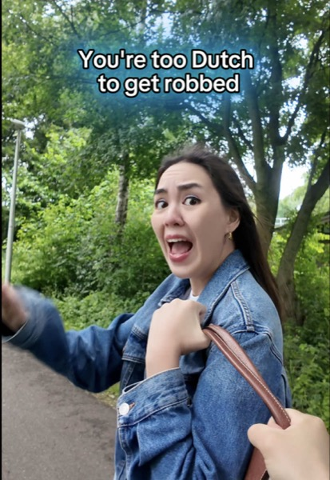
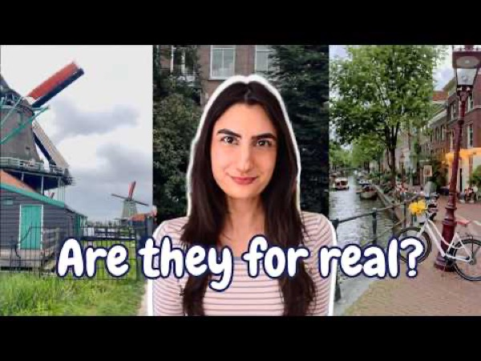
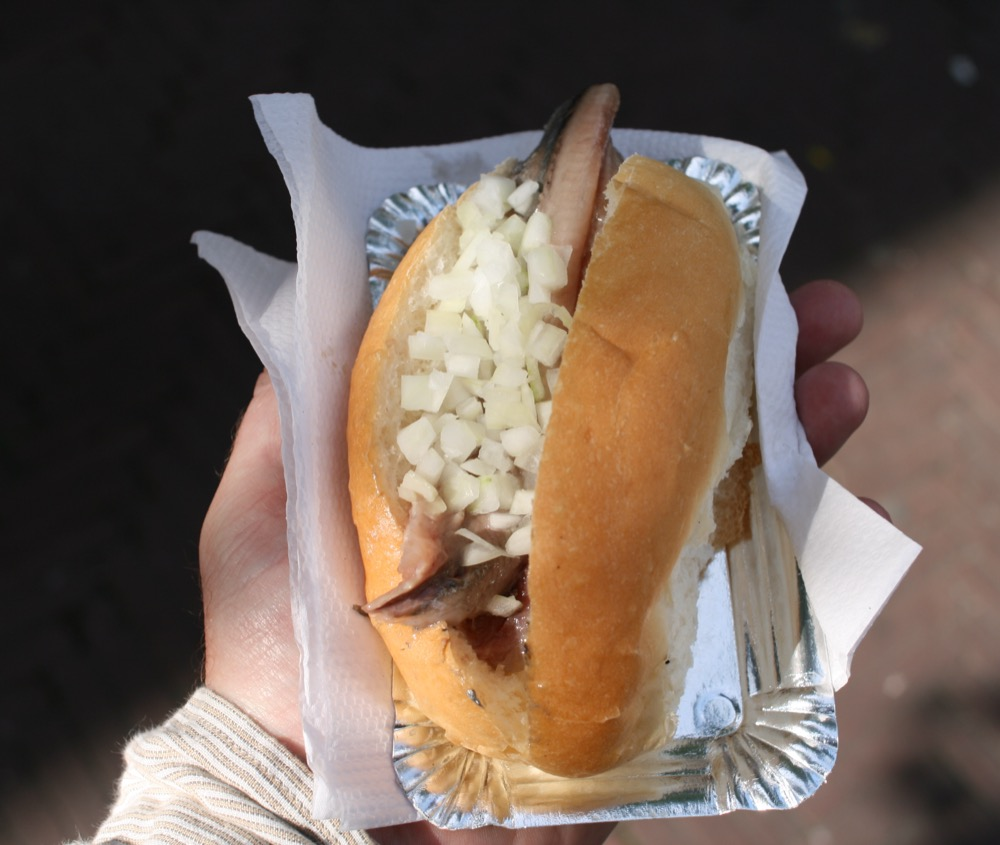
Since the whole week points at the herring, here is your first lesson in eating like us. A broodje haring is our new herring, the Hollandse Nieuwe, tucked into a soft white bun with a heap of raw chopped onion and sometimes a little pickle. It is mild and buttery, not fishy, and you buy it from a cart in the street. The brave skip the bun entirely: hold the fillet by its tail, tip your head back, and lower it in. Do it once and you are halfway Dutch.
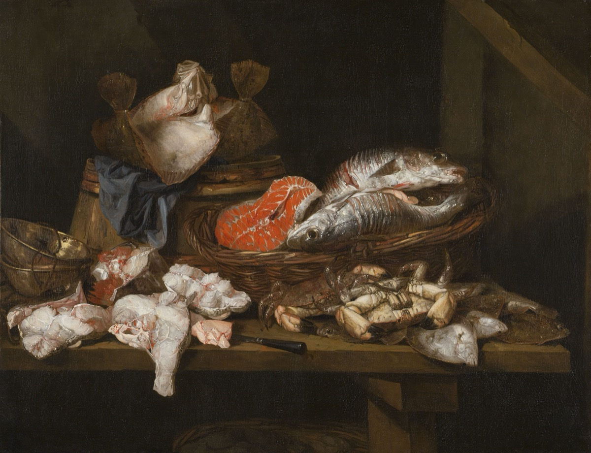
To match the herring, a painting of the catch. Abraham van Beijeren was the great master of the fish still life in our Golden Age, and here is the lovely part: he was born right here in The Hague, your new city, around 1620. Look at how he paints wet scales catching the light. He cared less about getting every shape exactly right than about that one bright gleam that makes a fish flank look slick and just-pulled-from-the-sea. Find the cut salmon, the crab, and the little knife left on the table.
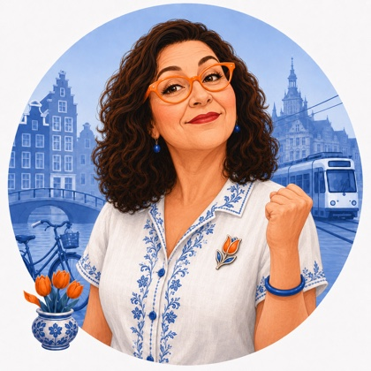
The Hague & Scheveningen dispatch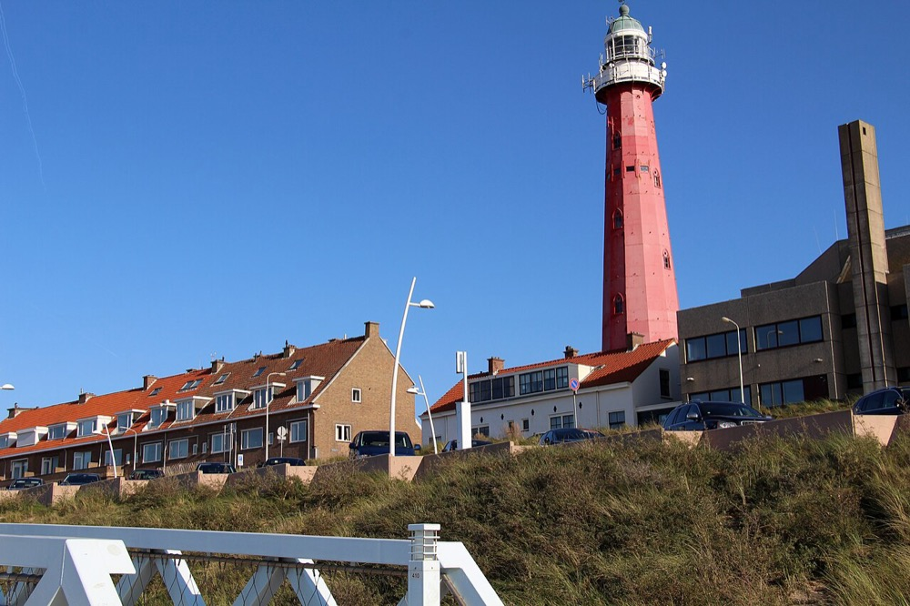
A little heritage, first. That tall red tower is the Scheveningen lighthouse, watching over the harbour since 1875, back when your seaside neighbourhood was still a working fishing village. A few streets along stands the grand Kurhaus hotel, a seaside palace from 1885 where, in its day, the Rolling Stones once played. A fishing town and faded glamour, side by side, and soon your everyday walk.
Something to put in the diary. On two Friday nights in August, the 14th and the 28th, Scheveningen sets off fireworks straight out over the North Sea, launched from barges and free to everyone on the beach. Picture it: five minutes from home, a blanket on the sand, the whole boulevard one warm crowd as the sky lights up over the water. Read more about the seaside fireworks →
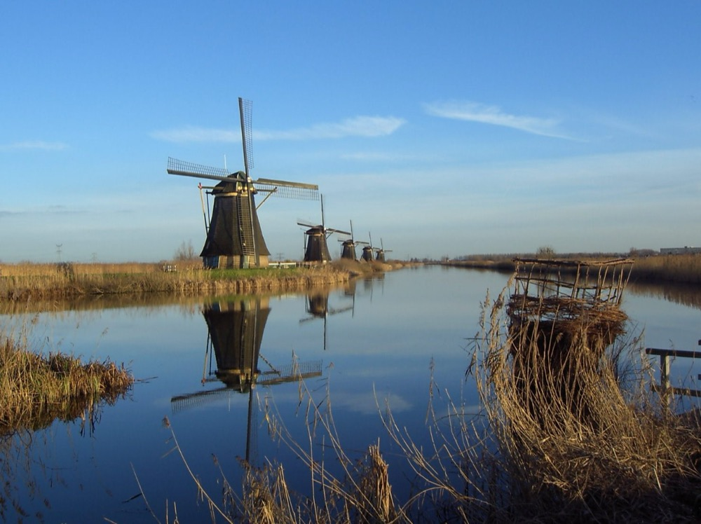
When you want the Holland of the postcards, go to Kinderdijk. Nineteen windmills from the 1700s stand in a long row along glassy canals, turning the way they have for three hundred years, and it is an easy afternoon from where you will live. Take the little waterbus from Rotterdam, walk or rent bikes on the flat paths, and there it is, the whole idea of this country laid out in front of you: water, wind, and patience.
And before I let you go, a glance at what is coming for this little family of ours.
🌷 Tulp's question for the table
Here is something to talk about this week, on your call or in the family chat. Write back and tell me what you decide.
The herring dare. Now that you know the trick (tail up, head back, and down it goes), the real question is who will actually do it. The whole fish raw the proper way, or safe in a bun with onion? Tell me which of you will turn out to be the bravest about strange new food.
That is the first letter, my dears. The clock at the top says thirty-nine weeks, and the herring season opens on Saturday, so the country is in a fine mood to welcome you to it. Write back and tell me what you liked best, the news, the food, the everyday, or the picture at the end, and I will give you more of it.
Eet smakelijk when you try that herring, and wear orange on Saturday.
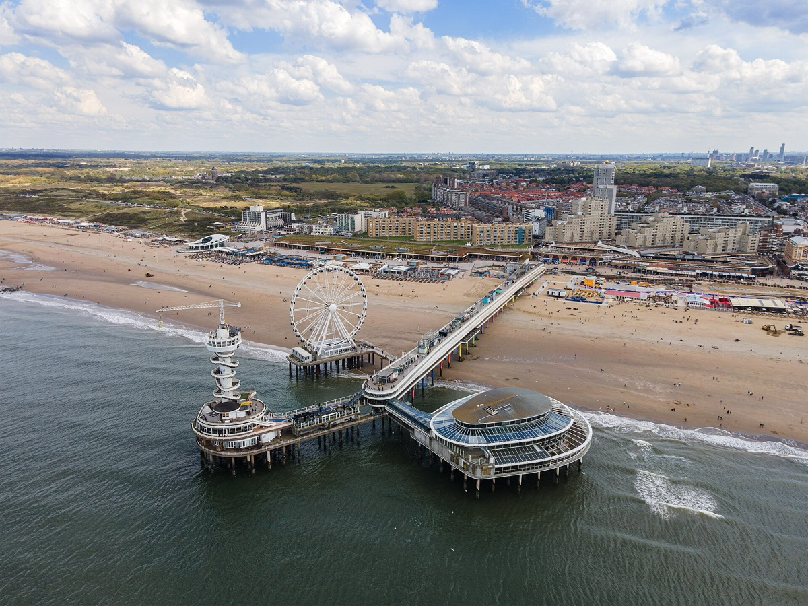
This is the pier at Scheveningen, reaching out into our cold grey North Sea, the Ferris wheel turning at its end. Soon this is simply your beach. I will meet you out at the end of it.
.jpg){kind=link}